Made in Abyss - el juego de rol
Usando el sistema Burning Wheel (Mouse Guard RPG)
Table of Contents
- 1. Prefacio
- 2. Personajes
- 3. Bestias y criaturas
- 4. Maldición del Abismo
- 4.1. Capas
- 4.1.1. Primera capa - Borde del Abismo (0~1350m)
- 4.1.2. Segunda capa - Bosque de la tentación (1350~2600m)
- 4.1.3. Tercera capa - La gran falla (2600~7000m)
- 4.1.4. Cuarta capa - Cáliz de gigantes (7000~12000m)
- 4.1.5. Quinta capa - Mar de cadáveres (12000~13000m)
- 4.1.6. Sexta capa - Capital sin retorno (13000~15500m)
- 4.1.7. Séptima capa - El vórtice final (15000~?????m)
- 4.2. Distorsión temporal
- 4.3. Naturaleza 0, Naturaleza 7
- 4.4. Bendición
- 4.1. Capas
- 5. Exploración
- 6. Reliquias de las Profundidades
- 7. Habilidades
- 8. Rasgos
- 9. Condiciones
- 10. Conflictos (ejemplos)
1. Prefacio
Si bien posiblemente no hay sistema que puede englobar y describir toda la riqueza que emana el Abismo de Akihito Tsukushi, bajo mi criterio considero que Burning Wheel -o mejor dicho, la modificación usada para el juego de rol de Mouse Guard- es la opción que conozco que mejor se adapta a lo que pretendo ilustrar en las aventuras de los jugadores en este desolador agujero.
Dicho esto, lo que pretenderé en este texto es dar las modificaciones necesarias al sistema de juego que he comentado para adaptarlo mecánicamente a las leyes por las que se rige el Abismo. Es decir, consideraré que ya se conoce el sistema Burning Wheel tal y como se introduce en el juego de rol de Mouse Guard.
Debo advertir que haré referencia a eventos, escenarios y personajes que hacen su aparición hasta el tomo 10 del manga, así que debes esperar spoilers si no has llegado hasta este punto de la trama.

2. Personajes
Por ahora, consideraré que todos los personajes jugadores son humanos de Orth para evitar complicaciones. Más adelante introduciré a los Narehate como personajes jugables, y la transformación de un humano en uno, diérase el caso.
Siendo posiblemente el ser humano uno de los escalones más bajos en la cadena alimenticia dentro del ecosistema del Abismo -de igual forma que los ratones dentro de los Territorios y las tierras colindantes-, podemos preservar el valor inicial entre los que oscilan muchas de las habilidades que un personaje posee. Sin embargo, dada la naturaleza sobrenatural de muchas reliquias y artefactos del Abismo, resulta natural que estas restricciones puedan variar fuera de los límites que originariamente se imponen.
La Naturaleza, Salud y Voluntad de los personajes oscilan entre 1 y 6, mientras que sus Círculos, Recursos y Acero entre 1 y 10.
2.1. Rango
Existen distintos rangos, de igual forma que en la Guardia de los ratones. Éstos se distinguen por un silbato otorgado por el Gremio de Exploradores, y también se encargan de crearlos todos excepto los Silbatos Blancos.
| Silbato | Edad | Profundidad permitida |
|---|---|---|
| Cascabel | 5~11 | No descienden |
| Rojo | 12~17 | 550m |
| Azul | 18~25 | 2600m |
| Lunar | 21~40 | 12000m |
| Negro | 31~60 | 13000m |
| Blanco | 41~60 | 15500m o más |
Con tal de mantener algo de consistencia, recomiendo que los jugadores empiezen como Silbatos Rojos o Azules, o incluso Lunares si son experimentados.
| Pablo, el jugador de Riko decide que empieza la partida como una Silbato Rojo de 13 años de edad. |

2.2. Salud
En lo que se refiere a Salud no hace falta cambiar ningún aspecto. Salud se usa en situaciones donde se requiere fuerza bruta o resistencia, tal y como se describe en el sistema original. La Salud inicial depende del rango y es la siguiente:
| Silbato | Salud |
|---|---|
| Cascabel | 2 |
| Rojo | 3 |
| Azul | 4 |
| Lunar | 4 |
| Negro | 5 |
| Blanco | 6 |
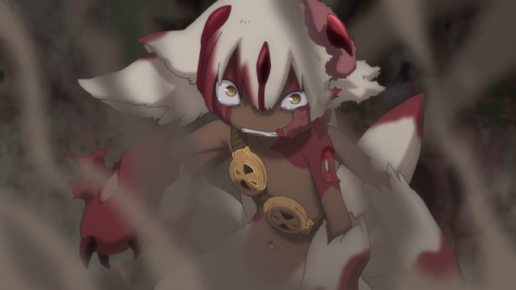
| Pablo anota que Riko empieza con Salud 3, ya que es una silbato Rojo. |
2.3. Voluntad
De igual forma que Salud, la Voluntad sigue cumpliendo sus mismas funciones: la fortaleza mental, adaptabilidad y perspicacia de un personaje. La Voluntad inicial también depende del rango y es la siguiente:
| Silbato | Voluntad |
|---|---|
| Cascabel | 1 |
| Rojo | 2 |
| Azul | 3 |
| Lunar | 4 |
| Negro | 5 |
| Blanco | 6 |

| Pablo también anota la Voluntad 2 de Riko, su personaje, una silbato Rojo. |
2.4. Círculos
Dado que la mayoría de los niveles del Abismo no tienen población humana alguna, el uso de esta aptitud se limita a zonas pobladas, o bien zonas donde sabemos que podemos encontrar a un humano.
Daré algo de forma a Círculos añadiendo que podemos agregar +1D a una prueba de Círculos si buscamos algo en nuestro barrio natal de Orth, o bien del orfanato Belchero. Tambén lo podemos obtener usando nuestro Silbato para llamar a otros exploradores dentro del Abismo.
| Silbato | Círculos |
|---|---|
| Cascabel | 1 |
| Rojo | 2 |
| Azul | 3 |
| Lunar | 3 |
| Negro | 4 |
| Blanco | 4 |
Además, todo jugador debe responder a las siguientes preguntas para ver si sus Círculos iniciales fluctúan:
¿Es sociable tu personaje? ¿Tiene muchos amigos o los hace con facilidad?
- Si es así, aumenta tus Círculos en 1.
¿Tiene lazos fuertes con el Gremio de Exploradores? Quizás sea tradición en tu familia ser explorador, o binen puede que tengas aliados en él.
- Aumenta tus Círculos en 1 si tu respuesta es afirmativa.
¿Ha logrado tu personaje alguna hazaña memorable? ¿Se ha ganado una reputación?
- Si la respuesta es sí, aumenta tus Círculos en 1.
¿Tiene tu personaje enemigos poderosos en el Gremio de Exploradores?
- Si es que sí, disminuye tus Círculos en 1.
¿Es tu personaje duro, solitario y distante?
- Si es que sí, reduce tus Círculos en 1.

2.5. Recursos
En Mouse Guard, los Recursos de un personaje se refiere entre otras cosas a su poder adquisitivo. Esta noción pierde el sentido en nuestro escenario una vez se encuentra en niveles inferiores del Abismo (exceptuando en la aldea de la sexta capa, Ilblu, pero incluso en este escenario la idea que presento puede ser válida).
Por tanto, diremos que los Recursos de cierto personaje son la medida en que éste está bien equipado, preparado para las ocurrencias del Abismo, y su capacidad de usar su entorno en su beneficio.
| Silbato | Recursos |
|---|---|
| Cascabel | 1 |
| Rojo | 2 |
| Azul | 3 |
| Lunar | 4 |
| Negro | 5 |
| Blanco | 5 |
Además, todo jugador debe responder a las siguientes preguntas para ver si sus Recursos iniciales fluctúan:
¿Preparas bien tu equipo antes de una expedición, intentando minimizar la improvisación sobre la marcha?
- Si la respuesta es que sí, aumenta tus Recursos en 1.
¿Eres partidario de dar a los necesitados por caridad, aunque no tengas mucho?
- Si no es así, incrementa tus Recursos en 1. No puedes escoger el rasgo Generoso.
¿Conoces bien los recursos que el Abismo ofrece y arrebata?
- En caso afirmativo, aumenta tus Recursos en 1.
¿Distingues las herramientas de los exploradores y aprecias sus funciones?
- Si no es así, decrementa tus Recursos en 1.

2.6. Acero
El Acero es un atributo que representa los nervios de tu personaje. Se pone a prueba cuando quedas conmocionado o sorprendido en situaciones que requieren actuar sin vacilar, y su resultado indica si retrocedes o tus nervios de acero te ayudan a seguir tu camino. La sorpresa, el dolor, el miedo y el asombro pueden provocar pruebas de Acero. Todo personaje empieza con un valor inicial de Acero de acuerdo a su rango.
| Silbato | Acero |
|---|---|
| Cascabel | 1 |
| Rojo | 2 |
| Azul | 3 |
| Lunar | 3 |
| Negro | 4 |
| Blanco | 5 |
Además, debe responder a las siguientes preguntas para ver si éste fluctúa:
¿Tu personaje es (o fue) un soldado, bandido, o explorador?
- Si es así, añade 1 a tu Acero.
¿Ha matado o asesinado con sus propias manos?
- Aumenta en 1 tu Acero si lo has hecho más de una vez. No puedes escoger el rasgo Compasivo.
¿Ha vivido una vida libre de violencia y dolor?
- Si es así, reduce tu Acero en 1.
¿Ha sido educado en un entorno competitivo?
- Incrementa tu Acero en 1 si la respuesta es sí.
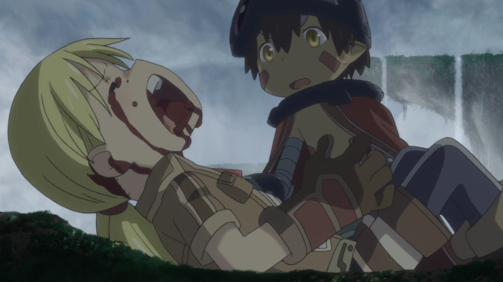
Rasgos como Valiente o Intrépido pueden darte ventaja en estas pruebas, mientras que Temeroso o Reflexivo no serán de gran ayuda.
2.6.1. Pruebas de Acero fallidas
Fallar en superar el Objetivo establecido por el GM en una prueba de Acero conlleva a una pérdida temporal del control de tu personaje. Puedes elegir si tu personaje opta por Huir gritando, quedarse Pasmado, Desmayarse o Caer y enroscarse.
2.7. Naturaleza
He aquí la piedra angular del juego. La Naturaleza de un personaje humano representa su humanidad, es decir, cómo en sintonía está con las habilidades y tendencias propias de un humano, en este caso.
Descrita de esta forma, una alta Naturaleza indica un alma fuerte, muy humana, mientras que una baja Naturaleza indica una mayor conexión con el Abismo y las fuerzas corruptas que se bañan en su inexpugnable seno.
Las criaturas nativas del Abismo también tienen Naturaleza. De igual forma que para los humanos, poseen aspectos asociados a ella.
2.7.1. Aspectos
En cuanto a los aspectos de la Naturaleza humana, resulta una complicada decisión. Quizás una buena opción sean Construir, Curiosidad, Cazar y Astuto.
Puesto que esta es solo una suposición, recomiendo encarecidamente que a la hora de sentarse a jugar el GM y los jugadores decidan los aspectos que crean más adecuados.
2.7.2. Variación
Recuperar Naturaleza que haya sido deteriorada puede hacerse de forma similar al sistema original: mejorándola normalmente, tomándote un descanso de la exploración del Abismo, u opcionalmente recuperar un punto de Naturaleza deteriorada al inicio de cada sesión, por ejemplo. Una buena comida y un sueño reparador con tus compañeros permite recuperar un punto de Naturaleza deteriorada.

Para determinar tu valor inicial de la Naturaleza, usa las siguientes preguntas como guía:
¿Sientes gran admiración hacia los Silbatos Blancos?
- Si tu respuesta es que sí, ?
¿Te aterran las historias de los exploradores veteranos?
- ?
¿Descenderías más de lo debido si tuvieras la oportunidad?
- ?
El deterioro de Naturaleza y los efectos que conlleva lo discutiré en la sección sobre la Maldición del Abismo.
3. Bestias y criaturas
La fauna del Abismo es tan peculiar como imprevisible, y se distribuye entre cada capa.

3.1. Primera capa
3.1.1. Colmillo de Seda (Gokoge)

Naturaleza Colmillo de Seda ?
???
3.1.2. Pico Martillo

Naturaleza Pico Martillo ?
???
3.1.3. Trucha Demoníaca (Gankimasu)

Naturaleza Trucha Demoníaca ?
???
3.2. Segunda capa
3.2.1. Cadáver Llorón (Nakikabane)
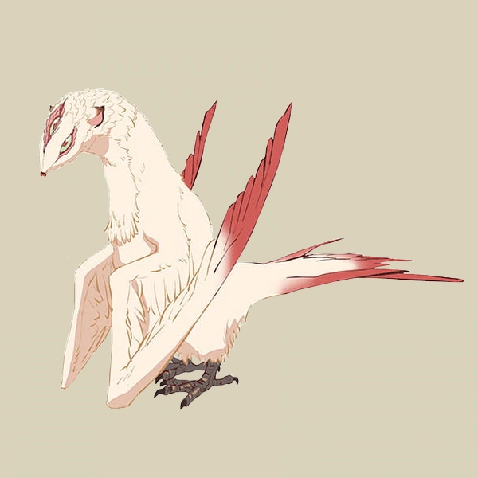
Naturaleza Cadáver Llorón ?
???
3.2.2. Inbyo
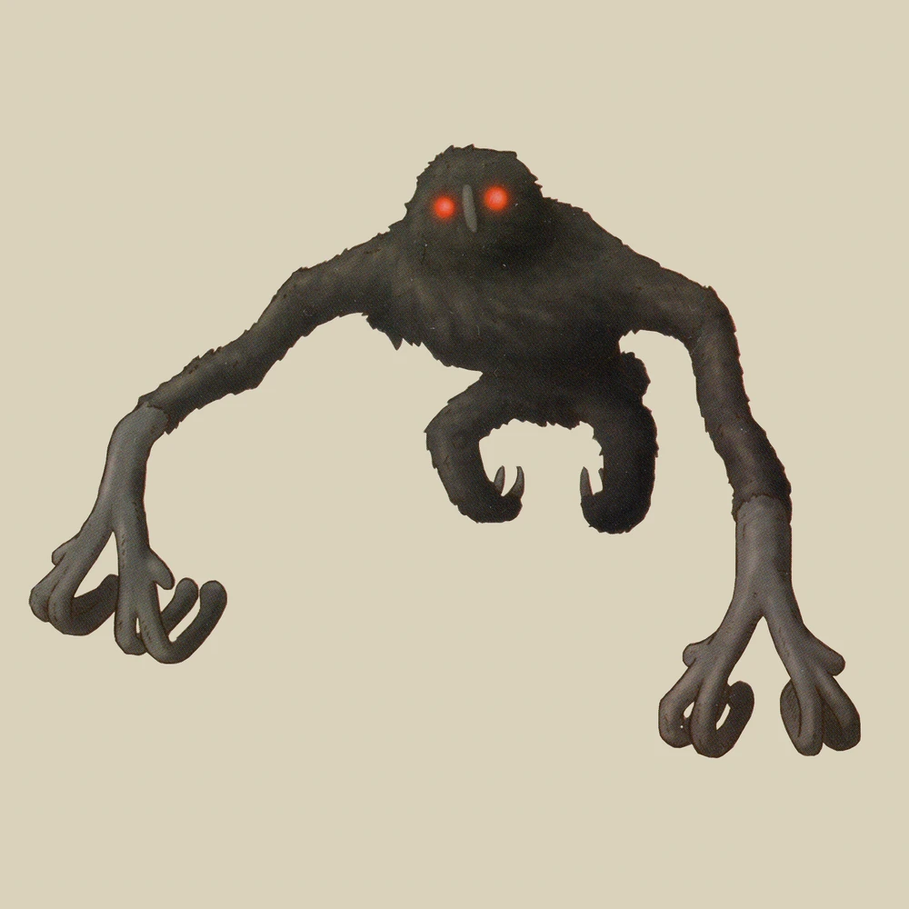
Naturaleza Inbyo ?
???
3.2.3. Ottobas (Ottobasu)
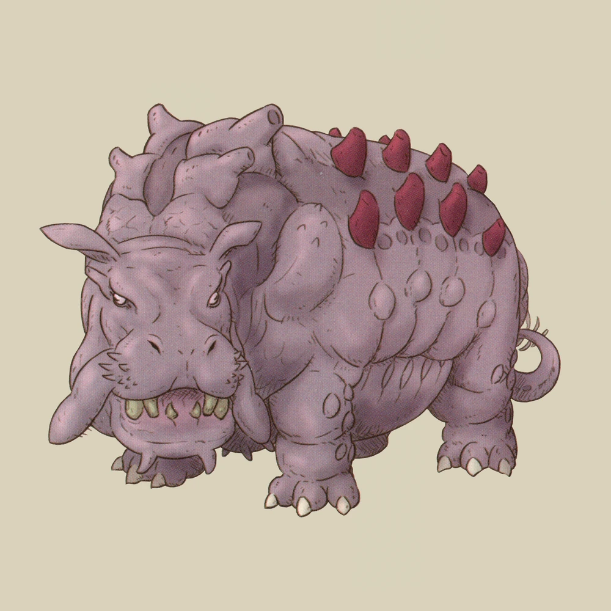
Naturaleza Ottobas ?
???
3.2.4. Wyvern
Naturaleza Wyvern ?
???
3.2.5. Rohana
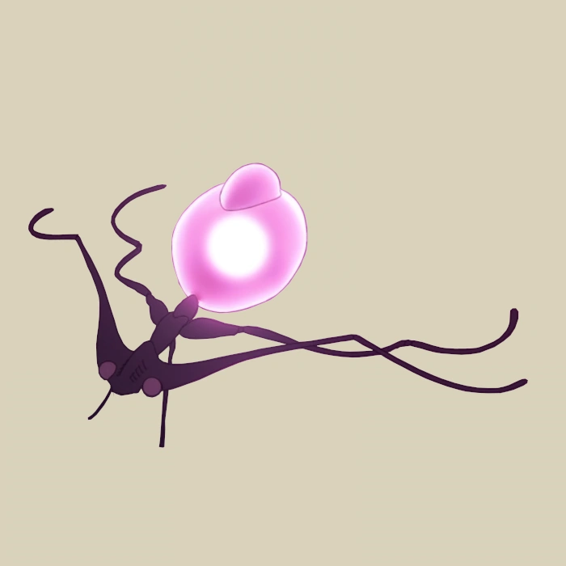
Naturaleza Rohana ?
???
3.3. Tercera capa
3.3.1. Madokajack

Naturaleza Madokajack ?
???
3.3.2. Sierpe Carmesí (Benikuchinawa)

Naturaleza Sierpe Carmesí ?
???
3.3.3. Neritantan

Naturaleza Neritantan 2
???
3.3.4. Amakagame

Naturaleza Amakagame ?
???
3.4. Cuarta capa
3.4.1. Orbe Perforador (Tamaugachi)
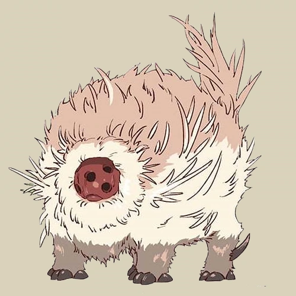
Naturaleza Orbe Perforador 10
Territorial, Agujas venenosas, Ágil, Implacable
3.4.2. Onitsuchi
Naturaleza Onitsuchi ?
???
3.4.3. Oso Seta (Takeguma)
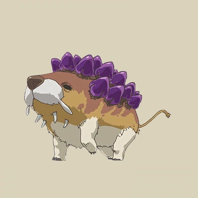
Naturaleza Oso Seta ?
???
3.5. Quinta capa
3.5.1. Hidra del Desierto (Kasshogashira)
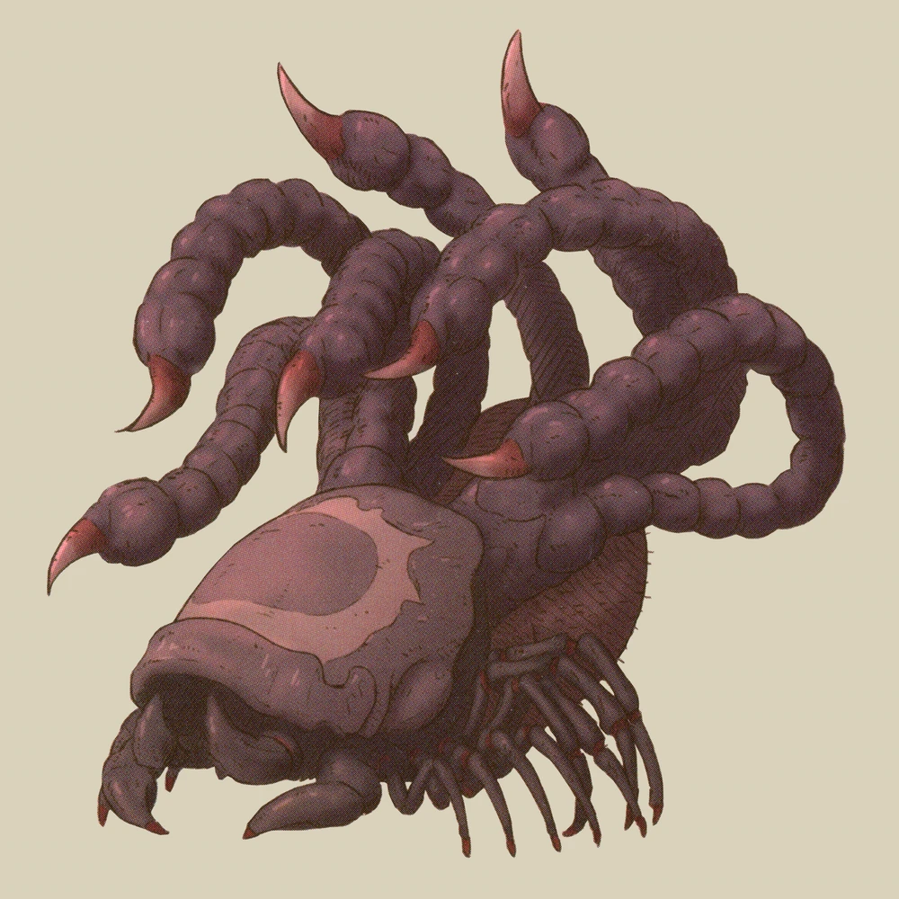
Naturaleza Hidra del Desierto 8
Astuto, Empalar, Cavar túneles, Depredador
3.5.2. Hamashirama
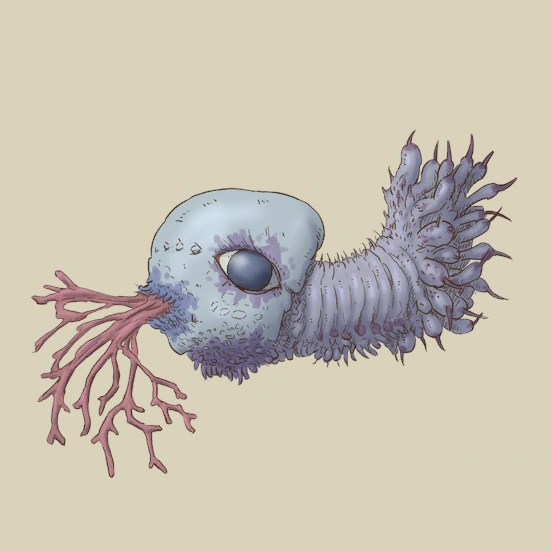
Naturaleza Hamashirama ?
???
3.6. Sexta capa
3.6.1. Meinastoirim

Naturaleza Meinastoirim 3
???
3.6.2. Emperorshell
Naturaleza Emperorshell ?
???
3.6.3. Kuongatari

Naturaleza Kuongatari 6
Mimetizarse, Moverse en enjambre, Volar, Entrar en orificios
3.6.4. Dragón Molusco (Ryuusazai)
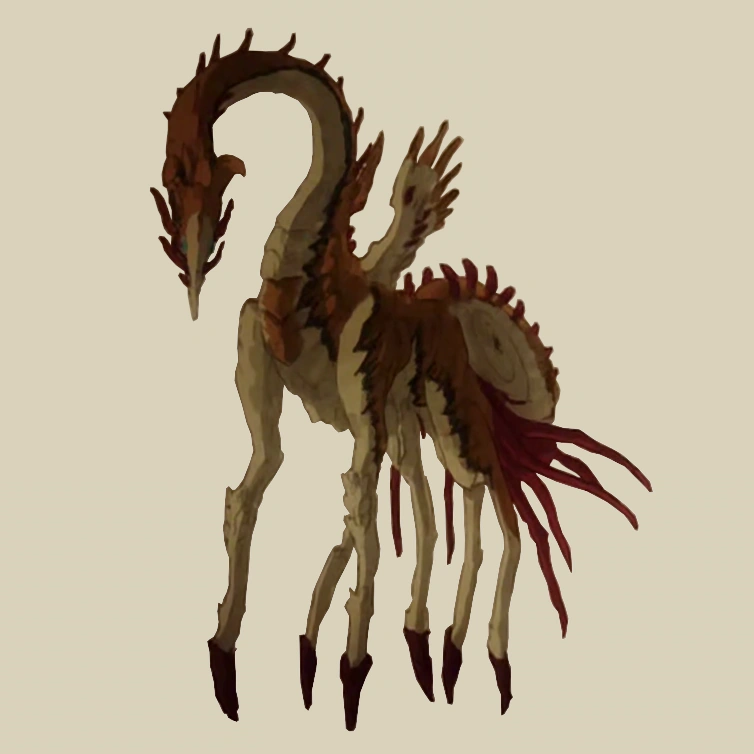
Naturaleza Dragón Molusco 12
Poderoso, Destructor, Gigantesco, Escamas venenosas
3.6.5. Misoujack

Naturaleza Misoujack ?
???
3.6.6. Fuzosheppu
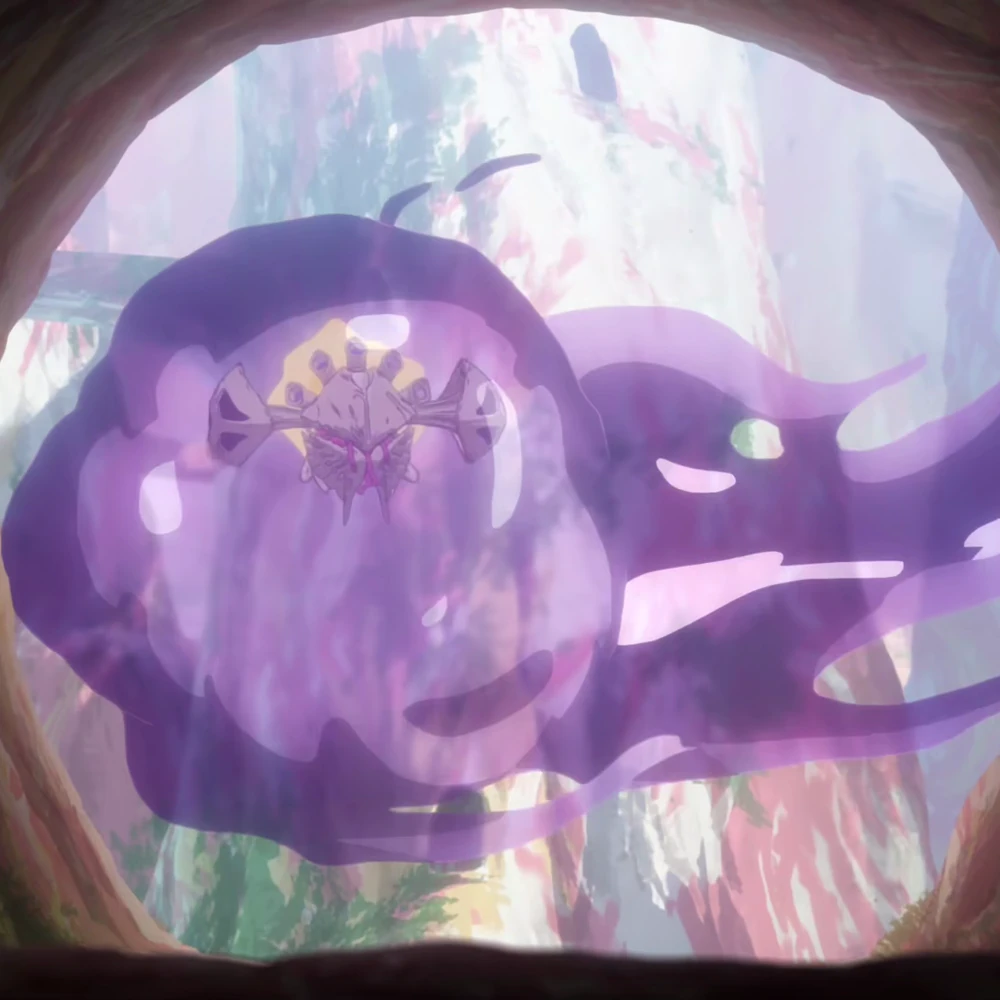
Naturaleza Fuzosheppu ?
???
3.6.7. Rata Hermitaña (Yadone)

Naturaleza Rata Hermitaña ?
???
3.7. Otras criaturas
3.7.1. Narehate (Maldito)
Naturaleza Narehate (Maldito) 1
???
3.8. Orden natural del Abismo conocido
[…]
| 6 | Dragón Molusco |
| 5 | Orbe Perforador, Kuongatari, Hidra del Desierto |
| 4 | Sierpe Carmesí, Madokajack, Fuzosheppu |
| 3 | Ottobas, Cadáver Llorón, Colmillo de Seda, Inbyo |
| 2 | Humano (adulto), Narehate (bendecido), Pico Martillo, Amakagame |
| 1 | Humano (niño), Narehate, Neritantan, Meinastoirim, Trucha Demoníaca, Hamashirama |
4. Maldición del Abismo
Las bestias no son el único peligro que asola a los humanos en el inframundo. La Maldición del Abismo es la prueba irrefutable de que el pozo corrompe, sea rápido o poco a poco, a todo aquel que osa desafiarlo.
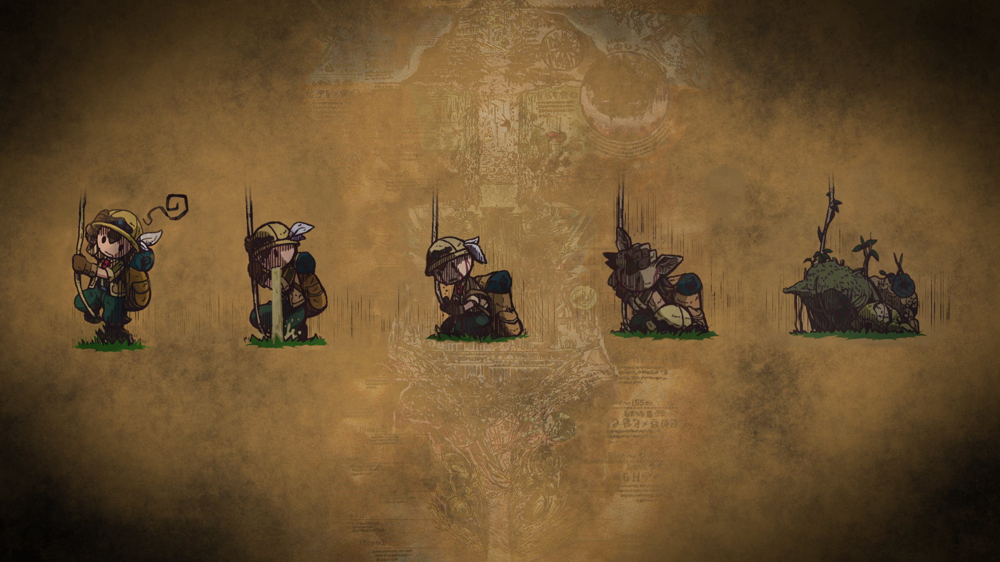
4.1. Capas
El ascenso por las diferentes capas tiene efectos adversos para los personajes. Aplica los que correspondan al ascender 10 metros o más.
4.1.1. Primera capa - Borde del Abismo (0~1350m)
No hay pérdida de Naturaleza. Haz una prueba de Salud Ob 2.
| Superada | Sin consecuencias. |
| Fallida | Quedas mareado (Cansado). |

4.1.2. Segunda capa - Bosque de la tentación (1350~2600m)
Tu Naturaleza se deteriora en 1 punto. Haz una prueba de Salud Ob 3.
| Superada | Notas dolor de cabeza (Enfadado). |
| Fallida | Sufres náuseas y dolores de cabeza (Cansado y Enfadado). |
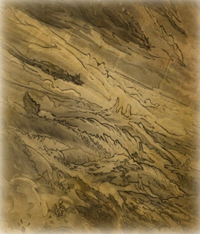
4.1.3. Tercera capa - La gran falla (2600~7000m)
Tu Naturaleza se deteriora en 2 puntos. Haz una prueba de Voluntad Ob 3:
| Superada | Sufres mareos y vértigo (Cansado y Enfadado). |
| Fallida | Además de mareos y vértigo, tienes alucinaciones visuales y auditivas (Cansado, Enfadado y -1D en pruebas de Naturaleza, Salud y Voluntad durante 20 minutos). |
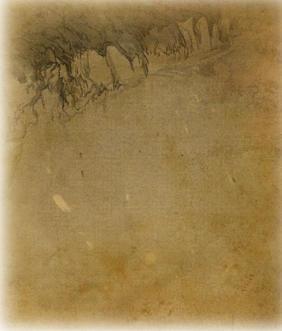
4.1.4. Cuarta capa - Cáliz de gigantes (7000~12000m)
Deterioro de 3 puntos de Naturaleza. Haz una prueba de Salud Ob 4:
| Superada | Sufres un dolor intenso por todo el cuerpo y hemorragias por todos los orificios (Cansado y Herido). |
| Fallida | Las mismas consecuencias que la prueba superada, pero también quedas inconsciente durante 20 minutos. |
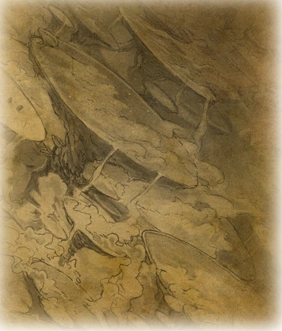
4.1.5. Quinta capa - Mar de cadáveres (12000~13000m)
Naturaleza deteriorada en 4 puntos. Haz una prueba de Voluntad Ob 4:
| Superada | Quedas privado de tus sentidos y entras en comportamiento auto-lesionante (Cansado y durante 10 minutos -2D en pruebas de Naturaleza, Salud y Voluntad). |
| Fallida | Las mismas consecuencias que la prueba superada, pero también quedas inconsciente durante 20 minutos después de sufrir los primeros efectos. |
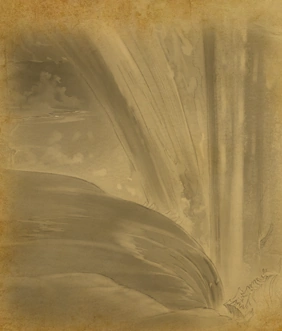
4.1.6. Sexta capa - Capital sin retorno (13000~15500m)
Tu Naturaleza se deteriora en 6 puntos. Haz una prueba de Voluntad Ob 5:
| Superada | Mutas permanentemente a un Narehate (Rasgo). |
| Fallida | También te vuelves un Narehate, pero la transformación te deja Herido y Cansado. |

4.1.7. Séptima capa - El vórtice final (15000~?????m)
Se desconocen los efectos completos, pero supondremos lo siguiente.
Naturaleza deteriorada en 7 puntos. Haz una prueba de Salud Ob.5:
| Superada | Sufres las mismas consecuencias que superar la prueba de ascenso desde las capas Quinta y Sexta. |
| Fallida | Sufres las mismas consecuencias que fallar la prueba de ascenso desde las capas Quinta y Sexta. |

4.2. Distorsión temporal
Se dice que hay alún tipo de distorsión del tiempo dentro del Abismo, aunque no se sabe con certeza si es real o una mera sensación de los exploradores. La Silbato Blanco Ozen afirma que el efecto se vuelve extremo a partir de la quinta capa de las profundidades, por experiencia propia: ella descendió lo que supuso fueron un par de semanas, pero en la superfície habían pasado meses.
Este efecto es opcional. Si escoges usarlo en vuestra partida, considera que una hora en la superfície equivale a la mitad del número de la capa actual de los jugadores, por ejemplo: una hora en la superfície son 2 horas en la 4ª capa.
4.3. Naturaleza 0, Naturaleza 7
Si tu Naturaleza se reduce a 0 se aplican las reglas originales (tu Naturaleza máxima se reduce en 1 y uno de tus rasgos cambia a uno diferente, como Tocado por el Abismo), excepto cuando has ascendido desde la 6ª o 7ª capa, en cuyo caso el rasgo adquirido es el de Narehate.
En caso que tu Naturaleza alcanze el valor máximo de 7, tu personaje pierde todo sueño de explorar el Abismo y sus peligros constantes y sin sentido, retirándose de su vida de explorador (volverá a Orth de la manera que pueda, y una vez allí se retirará o viajará a otro país en barco).
4.4. Bendición
La Bendición del Abismo es un fenómeno extremadamente peculiar, y se da únicamente en circunstancias específicas. Hacen falta dos personas con un gran vínculo emocional entre ellas, y que una reciba todo el peso de la Maldición durante el ascenso desde la sexta capa (al menos). Si sobrevive a la Maldición, la otra persona es perdonada y obtiene la Bendición. Ambas reciben el Rasgo de Narehate.

Semejante hazaña requiere que dos personas que aparezcan en la sección de amigos del otro (no hace falta si son dos jugadores del mismo equipo), y que la Bendita gaste un punto de destino durante la transformación. Si no se dan ambos requisitos, los dos reciben la Maldición del Abismo.
5. Exploración
El paisaje y entorno al que se enfrentan los personajes desesa ser explorado a fondo: especies nuevas que registrar, poderosas reliquias que desenterrar, el misterio de lo que se halla en las profundidades. El camino, sin embargo, es casi tan importante como el destino.
5.1. Iluminación
La falta de una fuente de luz durante un conflicto que use Salud como base en un lugar sin iluminación implica un -1 a tu disposición inicial.
6. Reliquias de las Profundidades
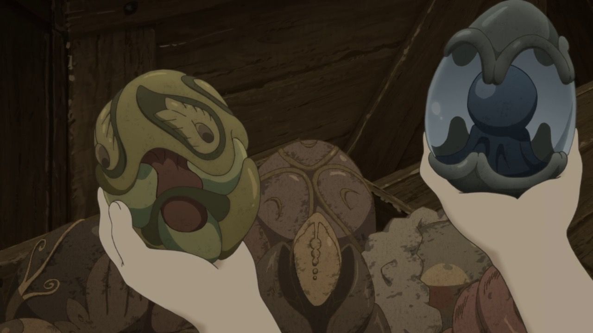
7. Habilidades
Las nuevas habilidades introducidas, junto con sus usos y factores, son las siguientes:
7.1. Escalador
Un escalador se dedica generalmente a trepar y descender simas y paredes montañosas.
Los escaladores pueden usar mapas creados por cartógrafos y herramientas creadas por herreros como suministros.
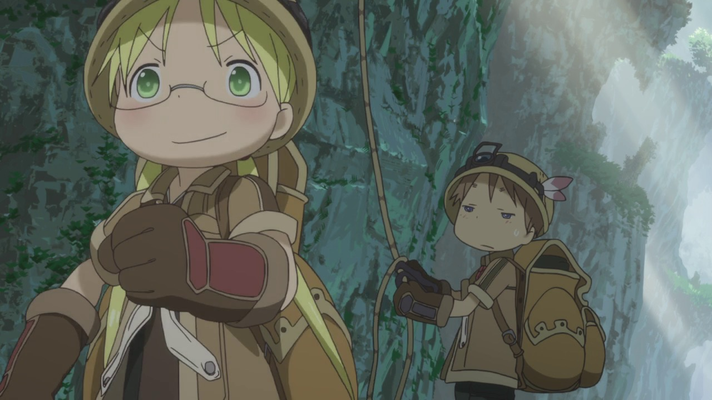
7.1.1. Factores para Escalador
Terreno: algo empinado (60º~80º), vertical (90º), muy empinado (120º~150º), boca abajo (180º+).
Distancia: 10 metros, 50 metros, 100 metros, 250 metros, 500 metros.
7.1.2. Sugerencias de ayuda para Escalador
Pionero, Explorador y los Conocimientos apropiados.
7.2. Conocimiento del flujo de Consciencias
Referente a la capacidad de detectar peculiaridades en el flujo de Consciencias. Es propio de Narehate y las criaturas y bestias nativas del Abismo.
8. Rasgos
Los nuevos rasgos introducidos y sus cualidades son los siguientes:
8.1. Tocado por el Abismo
Tus viajes a las profundidades te han pasado factura. El rasgo a nivel 1 indica que sufres cambios fisiológicos menores que se manifiestan de vez en cuando (necesidad de usar lentes para evitar dolor de cabeza, pérdida de uñas, baja estatura inususal o piel seca). A nivel 2 se tornan permanentes. A nivel 3 los cambios de vuelven mayores (irises negros como la tez, palidez extrema, comportamiento animalista, una dudosa moralidad, musculatura anormal, dificultades siendo socialmente aceptable).

8.2. Narehate
“Nare no hate” (Una sombra de tu antiguo yo). Ese es el destino de todo aquel que sobrevive al ascenso desde el sexto estrato del inframundo. Al adquirir este rasgo, tus Círculos se reducen a 1, puesto que el resto de exploradores te da por muerto (o te mataría si te vieran).
Si eras humano, tu forma queda deformada para siempre. Tu cuerpo queda reducido a un confuso montón de carne y tu Naturaleza, Salud y Voluntad se reducen a 1. Si obtuviste la Bendición, tu cuerpo cobra un aspecto más bestial, animal (pelaje, cola, alas, garras, largas orejas, escamas…). Ponte de acuerdo con en GM para esta mutación basándote en los deseos u objetivos de tu personaje.
Todos los Narehate pueden ver el flujo de Consciencias creado por la Maldición del Abismo, además de en qué lugares es más fuerte, débil, o inexistente. A sus ojos es parecida a una niebla que tinta los alrededores de un todo azulado. Por esto obtienes Conocimiento del flujo de Consciencias a nivel 2. Puedes usar esta habilidad para ayudar a tus compañeros indicando lugares más seguros para ascender.
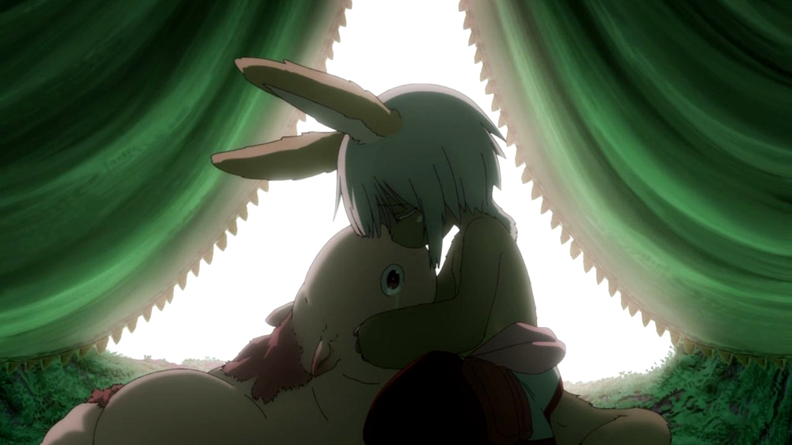
El rasgo de Narehate es uno especial: no puede ser eliminado ni cambiado de ningun modo, y únicamente se puede obtener por medio de la Maldición del Abismo. Tampoco tiene un nivel, mecánicamente se usa del mismo modo que un rasgo de nivel 2.
8.3. Ciudadano de la Ciudad Dorada
Se dice que el profundidades del Abismo se encuentra verdaderamente una Ciudad Dorada. Cualquier explorador daría lo que fuera por verla con sus propios ojos, si es que existe. Eres -o fuiste- uno de sus habitantes, hasta que ascendiste a los niveles superiores por obra del destino. Para los más conocedores de los secretos prohibidos del Abismo, se les asigna la categoría de reliquia “Aubade”, es decir, reliquias capaces de cambiar la historia del Abismo tal y como se conoce.
Puesto que no son realmente humanos sino robots muy parecidos a ellos, todo Ciudadano de la Ciudad Dorada tiene como valor máximo de Salud 7, y suelen empezar con un valor inicial de 6. Poseen además un arma única, el Lanzallamas (+5e a un ataque con éxito. Tiene cargas limitadas. Quedas inconsciente durante 2 horas al acabar el conflicto), y brazos que se extienden como ganchos hasta 40m (+1D a la acción de Maniobra). Adicionalmente, recuperarse de las condiciones Cansado, Herido y Enfermo es siempre Ob.2 para ellos, y son inmunes a los efectos de la Maldición del Abismo.

De igual forma que Narehate, el rasgo de Ciudadano de la Ciudad Dorada es uno especial: no puede ser eliminado ni cambiado de ningun modo, y únicamente se puede obtener si tu personaje hubiera sido así desde su concepción. Tampoco tiene un nivel, mecánicamente se usa del mismo modo que un rasgo de nivel 2.
No recomiendo tener personajes con este rasgo en la partida, puesto que tienen muchas más facilidades que el resto, y desequilibran al equipo.
9. Condiciones
Para añadir algo de drama, añadiré una condición a las ya existentes:
9.1. Envenenado
Puedes quedar envenenado como resultado de una prueba o conflicto fallido contra flora o criaturas del Abismo. Para sanar el envenenamiento no se puede prescindir de un sanador como con las condiciones Herido y Enfermo. Por ello es una condición muy peligrosa para un jugador, ya que puede ser letal si no es tratada a tiempo.
Mientras estés envenenado sufres una desventaja de -1D en todas las pruebas de Salud, Voluntad y Naturaleza, además de modificar con -1 la disposición de cualquier conflicto. Cada cinco minutos después de quedar envenenado, debes superar una prueba de Salud Ob.3 o los efectos del veneno empeoran restando 1D más en las pruebas y -1 más a la disposición de conflictos. Si la cantidad restada a las pruebas supera tu valor actual de Voluntad, entras en un estado catatónico. Si supera tu valor actual de Salud, mueres.
De igual forma que con las condiciones Herido y Enfermo, un sanador puede superar una prueba Ob.3 para eliminar esta condición. Si falla, significa que ya es demasiado tarde para ti.
| Nanachi pretende utilizar su habilidad Sanador 4 para ayudar a Riko con su envenenamiento. Usando como ayuda su Conocimiento sobre venenos 2 (+1D) y los suministros que tenía guardados (setas de Osos Seta, +1D), obtiene +2D a su prueba. Tiene en total 6D. Al tirar logra 4 éxitos, y como eliminar el envenenamiento es Ob.3, consigue eliminar la condición de Riko. |
10. Conflictos (ejemplos)
| Al llegar a la cuarta capa, Riko y Reg entran en el territorio de un Orbe Perforador, que les planta cara. El GM declara un conflicto y se deciden los objetivos. El Orbe Perforador pretende asesinar a los intrusos, mientras que Reg y Riko pretenden huir a una zona segura. |